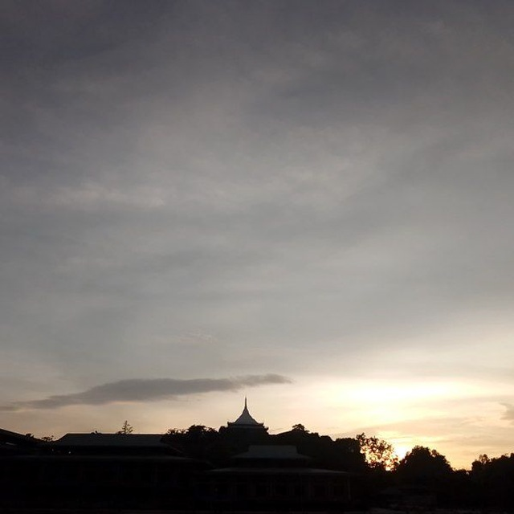

About Our Heritage
The Karen people have thrived in the shadow of Mount Zwekabin for generations. Our sacred mountain stands as a symbol of resilience and connection to our ancestral lands.
From traditional weaving patterns inspired by the mountain's contours to folktales born from its slopes, Zwekabin is woven into every aspect of Karen culture.
This project documents our unique relationship with the mountain and surrounding ecosystems.

Mountain-Inspired Traditions
Mountain Agriculture
Traditional farming techniques adapted to Zwekabin's slopes and seasons.
Watershed Knowledge
Ancient understanding of the mountain's water systems and springs.
Spiritual Practices
Sacred rituals connected to the mountain's natural features.
Textile Patterns
Weaving designs that mirror the mountain's ridges and forests.
Zwekabin Conservation Projects